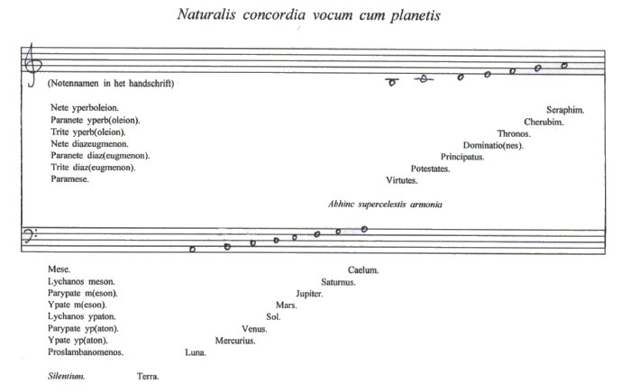
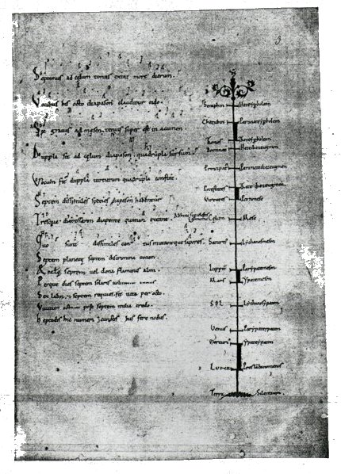

Inhoudsopgave
Boethius Inhoudsopgave
Boethius  Besluit Besluit
Verdere Historische Ontwikkelingen
De kern van het pythagoreïsche geloof in universele
harmonie is, zoals eerder gezegd, de ‘muziek’ van de hemellichamen.
Maar deze harmonie beperkt zich niet tot de hemelen, ook het ondermaanse heeft
er deel aan. Op aarde, in de vier elementen vuur, lucht, water en aarde, in de
wisseling van de seizoenen, in de bewegingen van zee en winden, in het groeien
en vrucht dragen van bomen en planten, overal is er harmonie.
Van deze en andere aardse fenomenen dacht men dat zij verbonden waren met de
hemel, en daardoor onderhavig aan dezelfde muzikaal-mathematische wetten. In
het derde boek van Peri mousikês (Over de Muziek) geeft Aristides
Quintilianus (eind 3de, begin 4de eeuw n.c.) een inzicht in deze
overeenkomsten.(1)
ok de mens (de microcosmos) deelt in deze harmonie, van de ontwikkeling van het
embryo (zie bijvoorbeeld Censorinus, De die natali) en de verhoudingen
van het menselijk lichaam tot het gedrag van de mens, alles is in
overeenstemming met, of afhankelijk van de hemelse harmonie. Met name in dit
laatste is de scheidslijn tussen hemelse harmonie en astrologie dun. Het derde
boek van Ptolemaeus’ Harmonika is geheel gewijd aan deze kosmische
analogieën.(2)
Het christendom bleef evenmin onberoerd door ideeën
over harmonie en kosmische muziek. Vanuit het Joodse geloof in een geordende,
klinkende hemel, waarin engelen Gods lof zingen - zoals blijkt uit het
bijbelboek Ezechiel, de psalmen, met name psalm 148 (verwijzingen naar de NBG
vert.); maar ook bijvoorbeeld psalm 19: 1-5, 104, of het bijbelboek Job (met
name 38) wijzen op een ‘klinkende kosmos’, - ontwikkelt zich het
geloof in een musica coelestis: muziek gezongen door de engelen die de
hemelen boven de sterren bewonen.(3)
Hierbij hoort een toonladder van twee octaven (A-a’), het onderste octaaf
representeert de aarde en de hemellichamen; het bovenste octaaf echter wordt
verdeeld over zeven orden van engelen. Deze toonladder is hiermee een
uitbreiding van een octaaf (a-a’) van de toonladder die Boethius aan
Cicero ontleende (A-a) - zie afbeelding 3.(4) De orden van engelen (geplaatst in het
tweede octaaf a-a') werden ontleend aan het werk Hierarchia caelestis
van Dionysius de Areopagiet.(5)
Dionysius onderscheidde negen orden verdeeld in drie groepen van drie
(verwijzing naar de Goddelijke drie-eenheid): Seraphim (Serafim), Cherubim
(Cherubim) en Throni (Tronen) - het dichtst bij God; Dominationes
(Heerschappijen), Principatus (Vorstelijkheden) en Potestates (Machten); en
Virtutes (Krachten), Archangeli (Aartsengelen) en Angeli (Engelen) - het
dichtst bij de aarde. Deze laatste twee ontbreken in getoonde toonladder, een
toonladder die in het nog te bespreken werk van Robert Fludd terugkeert.(6)

II
In het algemeen doet de pythagoreïsche leer van een
klinkende kosmos zich overal gelden waar platonische of neo-platonische
ideeën opgeld maken: in de zesde eeuwse commentaren van Boethius en
Cassiodorus; in de Karolingische ‘renaissance’ (in het werk van
Johannes Scotus Eriugena of Regino van Prüm); in de geschriften van
auteurs uit de school van Chartres (12de eeuw); maar ook in Dante
Alighieri’s (1265-1321) Divina Commedia(7); of in de herleving van het platonisme aan het eind van
de 15de eeuw (de Florentijnse Academie!), met name in het werk van Marsilio
Ficino.(8)
Ook de afwijzing van het idee van de Harmonie der Sferen
door Aristoteles blijft gehoord, men treft zijn argumenten aan bij bijvoorbeeld
Albertus Magnus (1200-1280), Thomas van Aquino (1225-1274) of Roger Bacon
(1219-1292), die verantwoordelijk waren voor de introductie en enorme rol van
Aristoteles’ filosofie in de scholastiek(9); maar ook in het werk van muziektheoretici als Johannes
de Grocheo (13de-14de eeuw) of Johannes Tinctoris (1435-1511) treft men
ontkenningen van Sferen-harmonie op basis van Aristoteles’ argumenten
aan.(10)
In de 16de eeuw ontmoet het idee van de werkelijk klinkende hemel steeds meer
weerstand. En hoewel nog in 1589, op de bruiloft van Lorenzo de Medici, een
stuk opgevoerd wordt genaamd L’ Armonia delle sfere, waarin
Giovanni de’ Bardi volgens getuigenissen in muziek en toneelbeeld de
mythe van Er probeerde uit te beelden(11); of in de renaissancepoëzie, met name de Engelse(12), de Harmonie der Sferen een veel
gebruikt topos is, wordt de toon die men aanslaat steeds
skeptischer.
Deze ontwikkeling zet zich door in de 17de eeuw, waar door overmatig gebruik(13) de poëtische kracht van het
beeld van de klinkende hemel slijt en gekoppeld aan de nieuwe kosmologie die
zich aandiende in de werken van Nicolaus Cusanus, Copernicus, Galilei, Kepler,
en Newton, de nieuwe affektenleer van Descartes (Les passions de
l’âme. 1649) die geen beroep meer doet op
‘harmonie’ en harmonie der sferen, en de andere invalshoek van de
muziektractaten in het algemeen na Zarlino (meer specialisatie, geen grote
compendia meer - men legde meer nadruk op de praktijk) komt men tot een
volledige verwerping van het oude idee van de Harmonie der Sferen.
Zo schiep Jonathan Swift in Gulliver’s Travels
(1726) een prachtige parodie op het oude idee van de Harmonie der Sferen en het
pythagoreïsme. Deze parodie loopt ongeveer als volgt: na Gulliver’s
reis naar Lilliput en Brobdingnac (de reuzen) brengt zijn derde reis hem naar
Laputa, het vliegende eiland. Het schip waarop hij had aangemonsterd en dat
naar ‘the East-Indies’ zou varen werd namelijk door twee
piratenschepen achtervolgd en overmeesterd. Op een van deze schepen bevond zich
een Nederlander, die echter een buitengewoon kwaadaardige inborst bezat: hij
stond erop dat Gulliver gedood werd. De piratenkapitein, een Japanner, stond
dit niet toe, maar dwong Gulliver in een bootje te stappen: ‘I got down
in the canoe, while the Dutchman standing upon the deck, loaded me with all the
curses, and injurous terms, his language could afford.’
Gelukkig wist Gulliver een verzameling eilandjes te bezeilen, alwaar hij, na
gerust te hebben, Laputa langszij ziet zweven. Nadat hij op het vliegende
eiland is toegelaten maakt Gulliver kennis met de vreemde zeden van de
inwoners. Deze droegen bijvoorbeeld kleding versierd met afbeeldingen van
zonnen, manen, sterren en talloze muziekinstrumenten waaronder fluiten en
harpen, maar ook in Europa onbekende instrumenten. Dragers van deze kleding
zijn zozeer in gedachten verzonken, dat zij door hun begeleiders met
varkensblazen op ogen of mond geslagen moeten worden om aan te geven dat zij
dit orgaan moeten gebruiken. Gulliver geniet met de koning van het eiland een
maaltijd waarvan de eerste gang (vlees en pudding) uit geometrische figuren
bestaat en de tweede gang (eend) de vorm van muziekinstrumenten had. Ook krijgt
Gulliver taalles door gesprekken over planeten, sterren, de zodiac en
geometrische figuren; zijn nieuwe kleding krijgt hij aangemeten door middel van
driehoeksmeting.
De tweede dag maakt hij het volgende mee:
‘On the second Morning, about Eleven o’ Clock,
the King himself in Person, attended by his Nobility, Courtiers, and Officers,
having prepared all their Musical Instruments, played on them for three Hours
without Intermission; so that I was quite stunned with the Noise; neither could
I possibly guess the Meaning, till my Tutor informed me. He said, that the
People of the Island had their Ears adapted to hear the Musick of the Spheres,
which always played at certain periods; and the Court was now prepared to bear
their part in whatever Instrument they most excelled.’(14)
Zo verwordt het idee van de Harmonie der sferen totaal, maar
dit speelt zich pas af in de 18de eeuw. De eeuw daarvoor, die van Robert Fludd,
Johannes Kepler en Athanasius Kircher, bracht voor de laatste maal een volledig
en samenhangend beeld van Harmonie der Sferen tot stand.
Afbeeldingen (terug)
 afb 3 Naturalis concordia
vocum cum planetis uit: Jacques Handschin, ‘Ein mittelalterlicher
Beitrag zur Lehre der Sphärenharmonie’ ZfM 9 (1927):
201
1. Zie bijvoorbeeld L.P.
Grijp en P. Scheepers, Van Aristoxenos tot Stockhausen. I. p. 81-98 (met
name p. 94 e.v. Verdere bibliografie aldaar) (terug naar
tekst)
2. Ibid. p. 53-81 (met name p. 75-76) (terug naar tekst)
3. Zie Kathi Meyer-Baer, Music of the Spheres and the
Dance of Death. (over de Sferen-harmonie als toonladder p. 72-86), dit werk
is vooral interessant wat betreft de iconologische representaties van de
Harmonie der Sferen in klassieke tijd, middeleeuwen en renaissance. Specifiek
over de zgn. ‘engelconcerten’ (afbeeldingen van musicerende
engelen): Meyer-Baer, op. cit. p. 87-187. Reinhold Hammerstein, Die
Musik der Engel. (met name p. 117-144 ‘Sphärenharmonie und
Engelsgesang’). Engelconcerten in de renaissance: Charles de Tolnay,
‘The Music of the Universe: Notes on a Painting by Bicci di
Lorenzio’ Journal of the Walters Art Gallery 6 (1943): p. 83-98;
en Emmanuel Winternitz, ‘On Angelconcerts in the 15th Century’
Musical Quarterly 49 (1964): p. 450-63. Eveneens renaissance
iconografie: S.K. Heninger, The Cosmographical Glass: Renaissance Diagrams
of the Universe. San Marino, The Huntington Library, 1979 (terug naar tekst)
4. De toonladder en het bijbehorende lied Naturalis
concordia vocum cum planetis, ‘De natuurlijke overeenstemming van de
tonen met de planeten’ (gedeelte van tekst en middeleeuws notenschrift,
de neumen, links in afb. 6) stammen uit een waarschijnlijk eind 11de eeuws (of
begin 12de eeuws) handschrift (Paris, Bibliothèque Nationale, Ms. Lat.
7203); de auteur is onbekend. De afbeelding is ontleend aan het artikel van
Jacques Handschin, ‘Ein mittelalterlicher Beitrag zur Lehre von der
Sphärenharmonie’ Zeitschrift für Musikwissenschaft 9
(1927): p. 193-208; waarin lied en toonladder uitgebreid behandeld worden. Maar
zie bijv. ook Hans Schavernoch, Sphären. p. 101-102; of Kathi
Meyer-Baer, Music of the Spheres and the Dance of Death. p. 80-82 (terug naar tekst)
5. De auteur van Hierarchia is onbekend. Het werk
wordt voor het eerst genoemd in 533 n.Chr. op het Concilie van Constantinopel.
De legende wil dat de auteur van de Hierarchia de Dionysius is die wordt
genoemd in Handelingen 17:34 en een bekeerling is van Paulus' bezoek aan
Athene, die Dionysius bij de Areopagus (‘Ares-heuvel’, een
heuvel ten westen van de Akropolis waar o.a. de rechterlijke macht in Athene
was gevestigd) tot geloof bracht. Vandaar diens bijnaam, ‘de
Areopagiet’. Omdat de werkelijke identiteit onbekend is, spreekt men ook
wel van pseudo-Dionysius. Zie over het werk Hierarchia bijv. Kathi
Meyer-Baer, Music of the Spheres and the Dance of Death. p. 38-41 (terug naar tekst)
6. Deze toonladder, als een ladder waarvan elke trede
omhoog dichter naar God leidt kan opgevat worden als een uitbeelding van de
zgn. ‘keten van bestaan’ (Chain of Being); een begrip dat
door Arthur O. Lovejoy uitvoerig is onderzocht in The Great Chain of Being.
A Study of the History of an Idea. Cambridge (Mass.), Harvard U.P., 1953.
Een definitie van dit idee luide als volgt: ‘The Chain of Being is the
idea of the organic constitution of the universe as a series of links or
gradations ordered in a hierarchy of creatures, from the lowest and most
insignificant to the highest, indeed to the ens perfectissimum which,
uncreated, is yet its culmination and the end to which all creation
tends.’ Uit: Lia Formigiari, ‘Chain of Being’ DHI 1.
p. 325-335 (terug naar tekst)
7. Zie over Dante bijvoorbeeld: Reinhold Hammerstein,
Die Musik der Engel. p. 175-191; Kathi Meyer-Baer, Musik of the
Spheres and the Dance of Death. p. 116-129; of Hans Schavernoch,
Sphären. p. 112-119 (terug naar
tekst)
8. Zie over de rol van de Sferen-harmonie in de periode van
Boethius tot Robert Fludd en daarnaast in het vroege Christendom en bij de
Kerkvaders, Hans Schavernoch, Sphären. p. 89-119. Specifiek over
Johannes Scotus’ Sferen-harmonie: Jacques Handschin, ‘Die
Musikanschauung des Johannes Scotus’ Deutsche Vierteljahresschrift
für Literaturwissenschaft und Geistesgeschichte 5 (1927): p. 316-41;
en Joscelyn Godwin, The Harmonies of Heaven and Earth. London, Thames
and Hudson Ltd., 1987. p. 140-43. Over Marsilio Ficino: Daniel P. Walker,
‘Ficino’s spiritus and music’ Annales
musicologiques 1 (1953): p. 131-50; en Spiritual and Demonic Magic from
Ficino to Campanella. London, Univ. of London, 1958. Over Sferen-harmonie
in de renaissance zie daarnaast: Claude V. Palisca, ‘Harmonies and
Disharmonies of the Spheres’ in: Claude V. Palisca, Humanism in
Italian Musical Thought. New Haven-London, Yale UP, 1985. p. 160-190.
Betrokken op de relatie magie en hemelsferen is bijv. Gary Tomlinson, Music
in Renaissance Magic. Chicago, Univ. of Chicago Press, 1993. (hoofdstuk 2,
en met name hoofdstuk 3 is interessant). (terug naar
tekst)
9. Zie bijv. Hans Joachim Störig, Geschiedenis van
de Westerse Filosofie. Utrecht/Antwerpen, Het Spectrum, 1959. I, p. 238
e.v. (terug naar tekst)
10. Voor een verder overzicht van de voor- en
tegenstanders van de Harmonie der Sferen, zie: H. Hüschen,
‘Harmonie’ in: MGG 5. kol. 1595/96; C.V. Palisca,
‘Harmonies and Disharmonies of the Spheres’ in: Humanism in
Italian Musical Thought. New Haven-London, Yale UP, 1985. p. 160-190; of
Hans Schavernoch, Sphären. p. 99-100 (terug
naar tekst)
11. Zie Kathi Meyer-Baer, Music of the Spheres and the
Dance of Death. p. 203 e.v.; of Daniel P. Walker, Les fêtes du
marriage de Ferdinand de Medicis et de Christine de Lorraine. Paris, Centre
national de la recherche scientifique, 1963. (terug naar
tekst)
12. Zie John Hollander, The Untuning of the Sky. Ideas
of Music in English Poetry 1500-1700. Princeton, Princeton U.P., 1961.; en
James Hutton, ‘Some English Poems in Praise of Music’ in: Mario
Praz (ed.), English Miscellany II. Rome, 1951. N.B. Het fragment uit
Chaucers Parliament of Fowls (vs 57-63) aan het begin (inleiding) wordt door Hollander behandeld op pagina 63 e.v.
Overigens de ‘he’ waarvan in dit vers sprake is, is Scipio’s
grootvader uit Cicero’s Somnium Scipionis, ‘hym’ is
Scipio zelf. Chaucer laat de protagonist van het verhaal dit ook nadrukkelijk
zeggen: ‘This bok of which I make mencioun/Entitled was al ther, as I
shal telle:/‘‘Tullyus of the Drem of
Scipioun.’’.’ (terug naar
tekst)
13. John Hollander, The Untuning of the Sky. p. 371
(terug naar tekst)
14. Jonathan Swift, Gullives Travels. 1726. ed.
London, Wordsworth Classics, 1992. p. 163-173. Derde citaat uit John Hollander,
op. cit. p. 381-382 (de editie van Herbert Davis, Oxford, 1941, p.
149-147). Hollander omschrijft de Laputanen als ‘perverted
philosopher-kings (...) much given to Pythagoreanism’! (terug naar tekst)
|